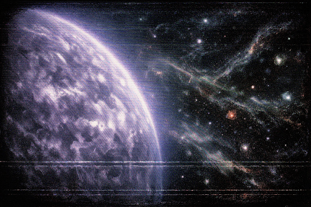
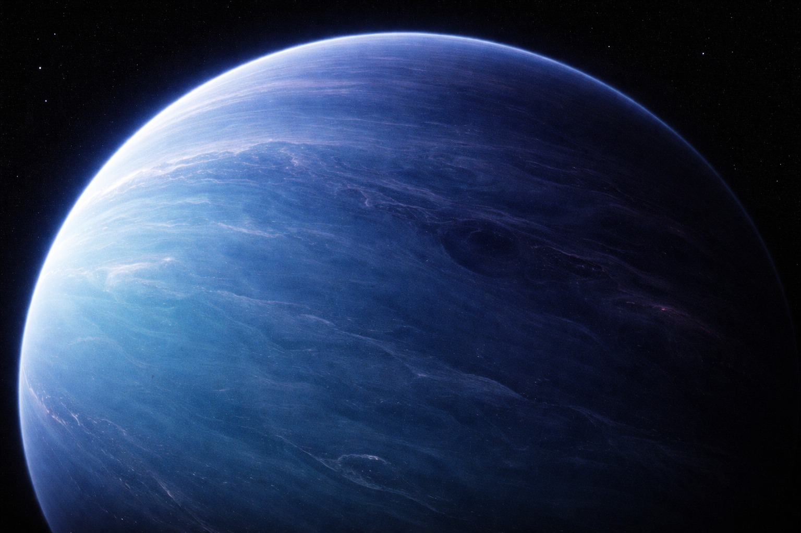
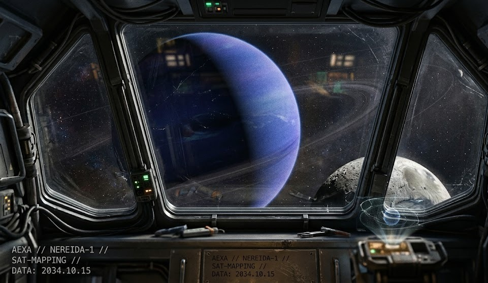
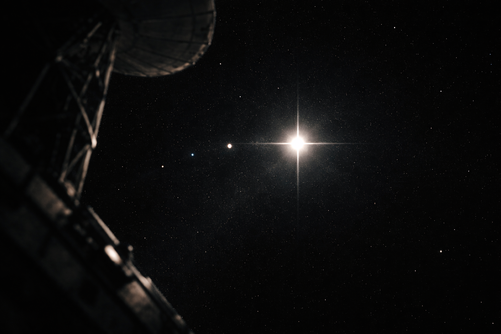

ESTADO DO SISTEMA // PROJETO HORIZONTE
O Comandante Eloy Markovic, primeiro ser humano a penetrar o véu do universo observável, encontra-se em órbita estável ao redor de Origin-Alpha. Seu corpo, mantido em estase tecnológica perpétua, transmite constantemente dados biotelemetricos e espectrais que revolucionam nossa compreensão do multiverso.
Última Verificação de Status
Sistemas AEXA: Operacionais
Transmissão Luxion: Estável
Câmera MARK-01: Danos por radiação multiversal (Não recuperável)
Armazenamento de Dados: 100% de capacidade preservada
A Órbita Silenciosa
Simulação orbital do Comandante Markovic em sua jornada contínua ao redor de Origin-Alpha. A dificuldade em rastreá-lo consistentemente é atribuída à distorção e ocultação causadas pelo vácuo energético trans-dimensional.
TPET - TABELA PERIÓDICA DE ELEMENTOS TRANS-UNIVERSAIS
Elementos descobertos através da análise contínua dos biossinais e dados telemétricos do Comandante Markovic.
Descoberta e Aplicações
Data de Primeiro Registro: Dias após a transmissão final
Aplicações Conhecidas: Motores de salto instantâneo, blindagens temporais, estabilização dimensional
Impacto Civilizacional: Revolução na física multiversal
PROJETO HORIZONTE - LINHA DO TEMPO
A Missão Trans-Dimensional
O Projeto Horizonte representa a primeira tentativa deliberada de um ser humano em perfurar o véu do universo observável e alcançar o vácuo energético além da bolha atmosférica de Origin-Alpha.
- Treinamento extensivo do Comandante Markovic
- Calibração dos sistemas AEXA
- Primeiras e únicas imagens do vácuo energético trans-dimensional
- Detecção de matérias anômalas desconhecidas
- Ativação automática de estase permanente
- Órbita estabilizada ao redor de Origin-Alpha
- Monitoramento contínuo até os dias de hoje
O Sacrifício de Markovic
A morte aparente do Comandante Markovic não marcou o fim de sua contribuição à humanidade, mas sim uma transformação. Seu corpo congelado tornou-se uma sonda bioluminosa de dados eterna, transmitindo informações sobre interações com matéria e energia trans-dimensional. Ele é agora o "Observador Silencioso" — um monumento flutuante à curiosidade humana.
Galeria de Fotos - Projeto Horizonte


Registros Pessoais de Markovic
PROJETO NETUNO - ARQUIVO HISTÓRICO (2034)
Resumo de Missão: Projeto Netuno
O Projeto Netuno foi uma missão tripulada experimental que serviu como prova de conceito para o motor de dobra espacial movido a Baryon-H. Foi a primeira vez que um ser humano utilizou propulsão trans-luminal para cruzar o Sistema Solar em tempo recorde. Esta foi a precursora experimental do Projeto Horizonte, realizado quatro anos depois.
Ano de Execução: 2034
Intervalo Temporal: 4 anos antes do Projeto Horizonte
Duração Observada: 4 meses (120 dias) - tempo do observador na Terra
Tempo Subjetivo da Tripulação: Apenas alguns minutos
Localização-Alvo: Órbita de Netuno, limite externo do Sistema Solar
Classificação: MISSÃO EXPERIMENTAÇÃO CRÍTICA
🚀 Objetivos Principais
⚠️ A Falha Crítica e Sucesso Inesperado
Diferente do Projeto Horizonte, que seria equipado com tecnologia trans-universal estabilizada, a nave do Projeto Netuno foi deliberadamente mantida simples. O protótipo Baryon-H V1 funcionava sem os refinamentos tecnológicos que viriam depois. Isso resultou em uma série de eventos críticos:
✓ Resultado Final: Sucesso Paradoxal
Apesar da falha técnica e do atraso no retorno, a missão foi considerada um sucesso total.
✓ Provou que a dobra espacial era fisicamente possível
✓ Demonstrou que o organismo humano pode sobreviver ao procedimento DAL
✓ Coletou dados inestimáveis sobre dilatação temporal em saltos transdimensionais
✓ Identificou os limites do Baryon-H V1 e necessidade de estabilizadores
✓ Forneceu base teórica para desenvolvimento de gerações futuras (que resultariam em Horizonte)
Impacto no Programa Espacial
O sucesso do Projeto Netuno, ainda que acidentado, abriu as portas para o programa trans-universal da AEXA. Os dados coletados indicaram que seria necessário integrar três tecnologias críticas para futuras missões:
2. Estabilizador Aether-G: Para compensar efeitos gravitacionais de dobra
3. Blindagem Luxium: Para proteção contra radiação trans-luminal
Galeria de Fotos - Projeto Netuno



📓 Diário de Bordo - Piloto Bryan Henderson
Veículo: Protótipo Nereida-1 (Motor de Dobra V1)
Status: MISSÃO CONCLUÍDA - SOBREVIVENTE ÚNICO
DIA 30: O Sussurro do Vácuo "Um mês. Era para eu estar em casa agora. O oxigênio está sendo reciclado pela terceira vez e tem um gosto metálico. Passo horas olhando para a mancha azul de Netuno lá embaixo. É linda, mas é uma beleza fria. Às vezes ouço estalos no motor... parece que o Baryon-H está tentando se comunicar com o vácuo."
DIA 60: A Sombra da Dúvida "Hoje faz dois meses. A AEXA já deve ter feito o meu funeral. Meus suprimentos estão no fim. Comecei a racionar a comida para uma refeição a cada dois dias. O frio aqui dentro é constante. Bryan Henderson, o primeiro homem a chegar em Netuno e o primeiro a morrer no esquecimento."
DIA 95: Alucinações de Luxions "Vi luzes lá fora hoje. Não eram estrelas. Eram flashes roxos e dourados. Acho que a radiação está vencendo a blindagem da Nereida. Comecei a falar sozinho para não esquecer o som da minha voz. Se eu não voltar, espero que alguém encontre este registro."
DIA 120: O Milagre de Baryon "Eu não acredito. Eu estava quase aceitando o fim quando o núcleo de energia deu sinal de vida. Eu não forcei, eu não apertei nenhum botão... ele simplesmente estabilizou. O motor de dobra voltou a vibrar. Vou tentar o salto de retorno agora. Se eu errar o cálculo, vou virar poeira espacial. Se eu acertar... vejo vocês em algumas horas."
O Projeto Netuno foi a ponte entre a física tradicional e a era trans-universal. Seu sucesso improvável pavimentou o caminho para o Projeto Horizonte, que ocorreria em 2038.
A NARRATIVA ÉPICA DE ELOY MARKOVIC
O Primeiro Explorador Trans-Universal
Esta narrativa, centrada na figura trágica e heroica do Comandante Eloy Markovic e em sua missão derradeira, o Projeto Horizonte, estabelece um marco fundamental não apenas para a exploração espacial humana, mas para a compreensão fundamental da física que rege o multiverso e o destino da própria espécie no cosmos.
A missão, a primeira a perfurar o véu do nosso universo observável e olhar para o vácuo energético além da bolha de gás atmosférico de Origin-Alpha, reescreveu os livros de ciência à custa da vida de um homem que se tornou, simultaneamente, o primeiro explorador trans-universal e um satélite perpétuo da criação.
O Observador Silencioso
O relato de que Markovic morreu após a captação da última imagem e de que seu corpo continua orbitando nosso universo é um pilar da história. O fato de que a NASA, através da Agência Especial de Exploração Avançada (AEXA), continua monitorando ativamente os biossinais de seu corpo congelado e em estase — com frequência cardíaca zero, oxigênio zero e temperatura de -271.4°C — é uma prova poderosa de que a missão não terminou com a morte dele; ela apenas mudou de fase.
Seu corpo é agora uma sonda de dados viva e eterna, orbitando a fronteira cósmica. A dificuldade em rastreá-lo consistentemente, conforme indicado pela telemetria flutuante e pela incapacidade de fotografá-lo novamente, reforça a escala colossal e a natureza dinâmica do vácuo energético, que distorce e oculta a matéria que nela se aventura.
A Pedra de Roseta do Multiverso
A relação direta entre a análise dos dados biológicos e telemétricos de seu corpo e a catalogação da Tabela Periódica de Elementos Trans-Universais (TPET) é o avanço mais crucial para a humanidade derivado de seu sacrifício. A catalogação de matérias como o Aether-G (condutor de gravidade com gravidade negativa), o Singularium-0 (vácuo absoluto que repele luz), e o perigoso Entropium (energia do caos tóxica e verde) foi possível apenas porque os sistemas da AEXA monitoraram como essas matérias interagiram com o corpo e a nave de Markovic.
A compreensão não é apenas teórica; ela é a base para o desenvolvimento de tecnologia que pode, um dia, permitir que a humanidade alcance o Comandante Markovic em sua órbita perpétua. As civilizações avançadas que vagam pelo vácuo, as mesmas que veriam a Terra como uma mina preciosa devido à variante estabilizada de Baryon-H no núcleo do planeta, usam combinações desses elementos para criar tecnologias inimagináveis.
Legado Imortal
Assim, o Projeto Horizonte é mais do que um memorial; é uma interface de terminal de segurança máxima que monitora os biossinais de Markovic em tempo real. É um console de dados de missão que recebe telemetria sobre anomalias quânticas e níveis de radiação de Matéria Real. A história de Eloy Markovic é a história do primeiro passo do homem rumo à maturidade multiversal, um passo que continua sendo dado, milímetro por milímetro, a cada nova leitura de dados vinda de seu corpo orbitando o universo.